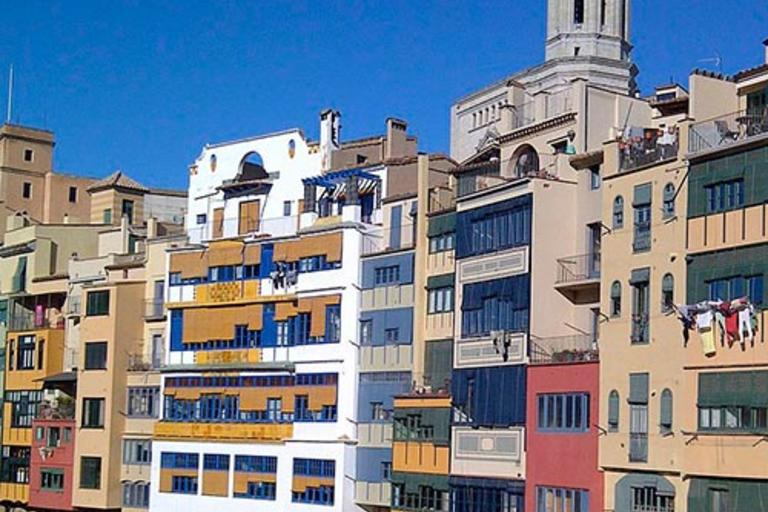

Visita · Girona
Girona ofereix espectaculars imatges de carrerons costeruts, d'espais amb porxades i, sobretot, de les façanes de les cases de l'Onyar (el riu que travessa el nucli urbà), pintades de colors vius,…